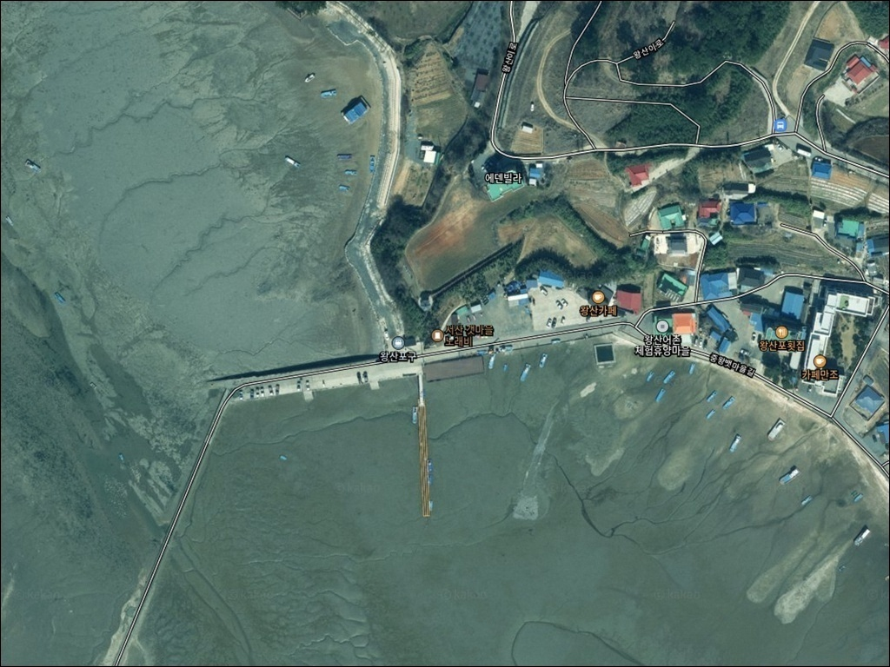
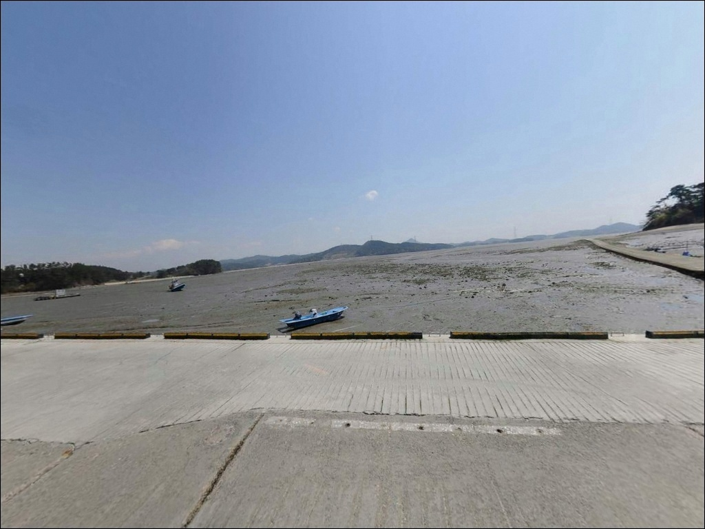
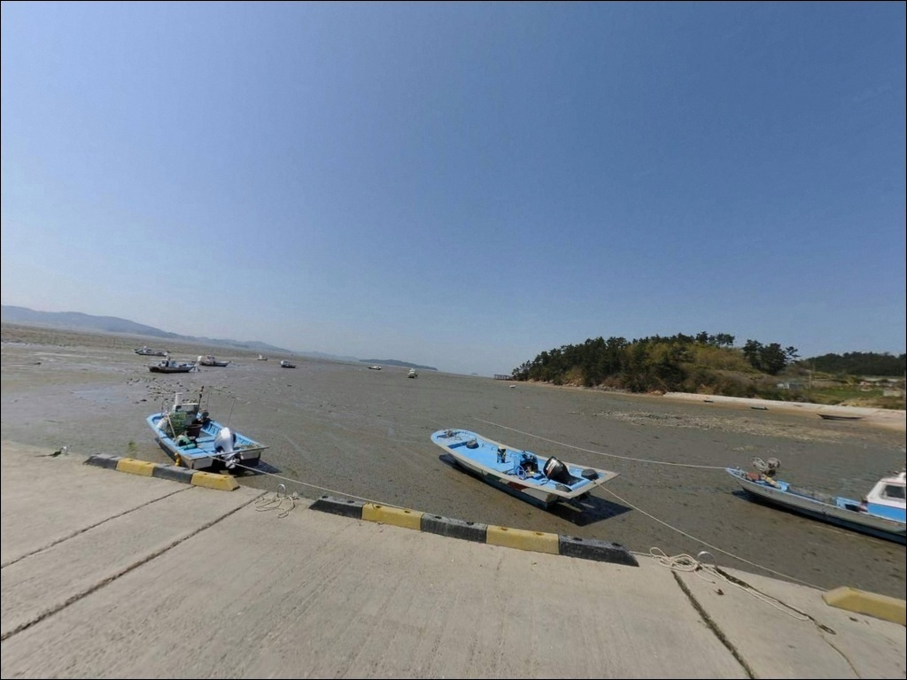
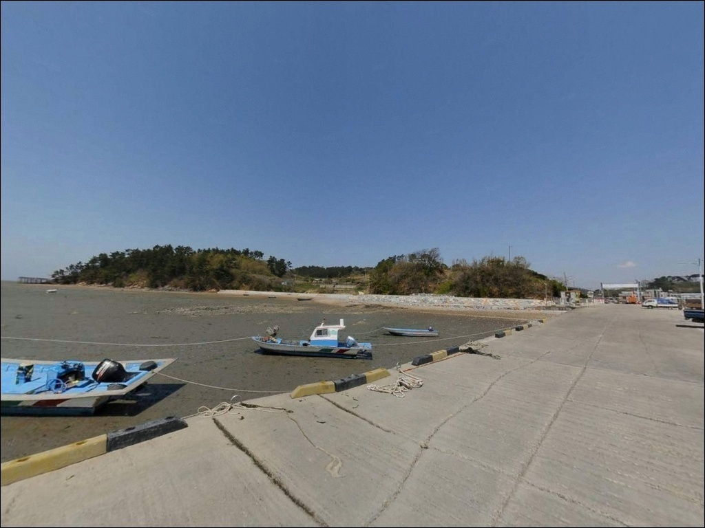
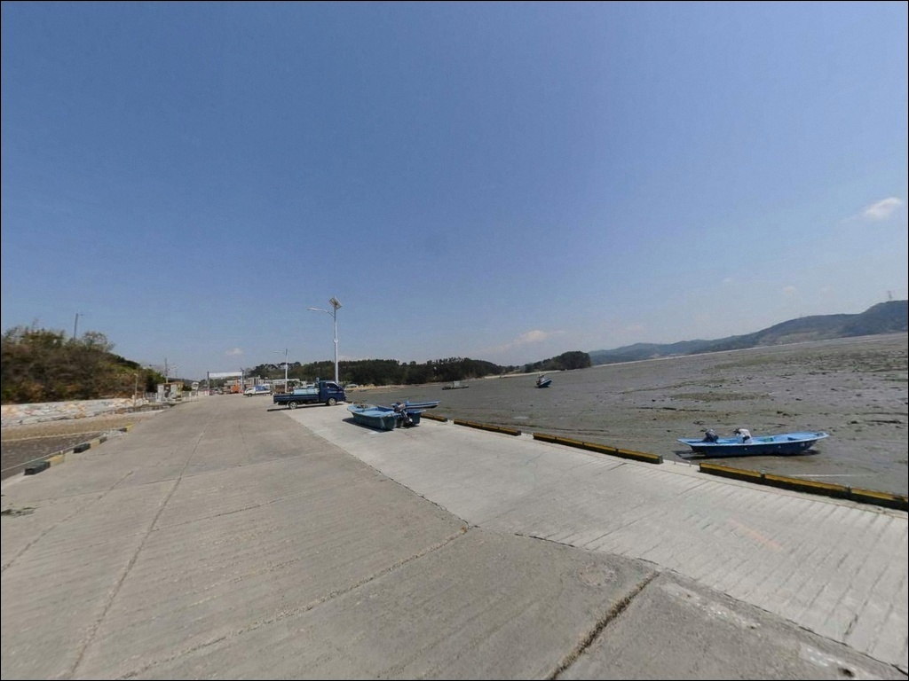
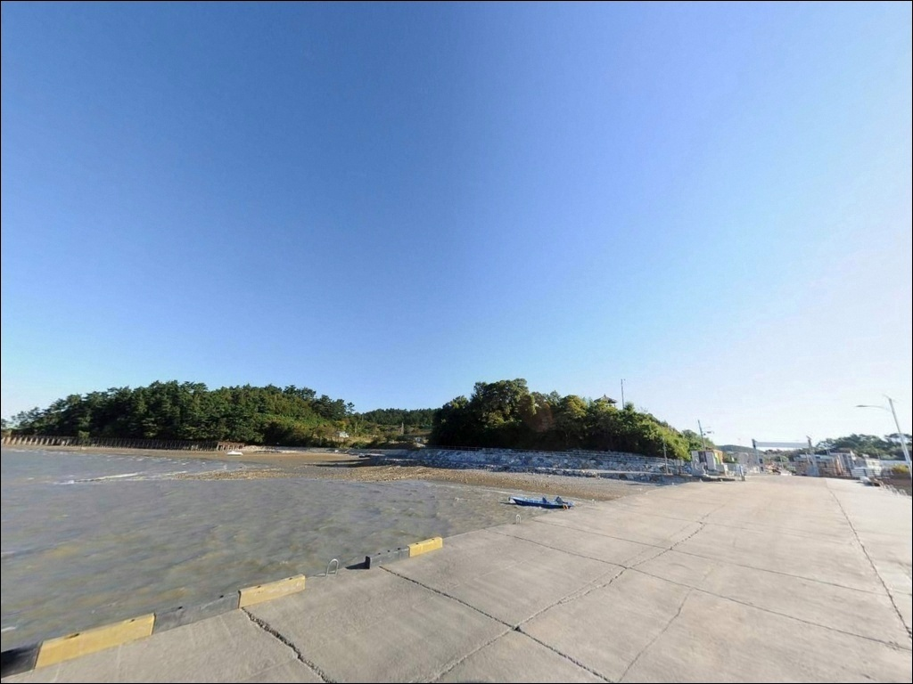
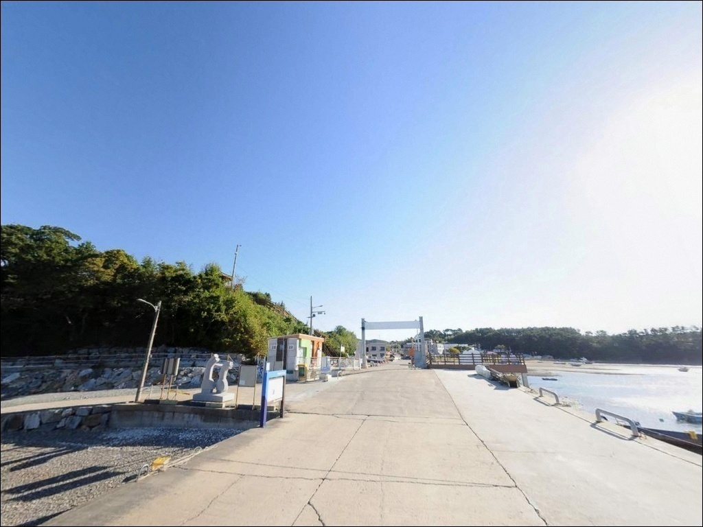
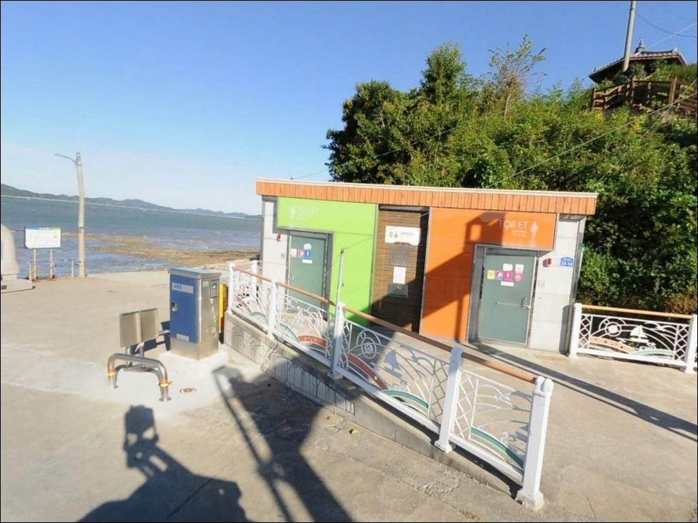
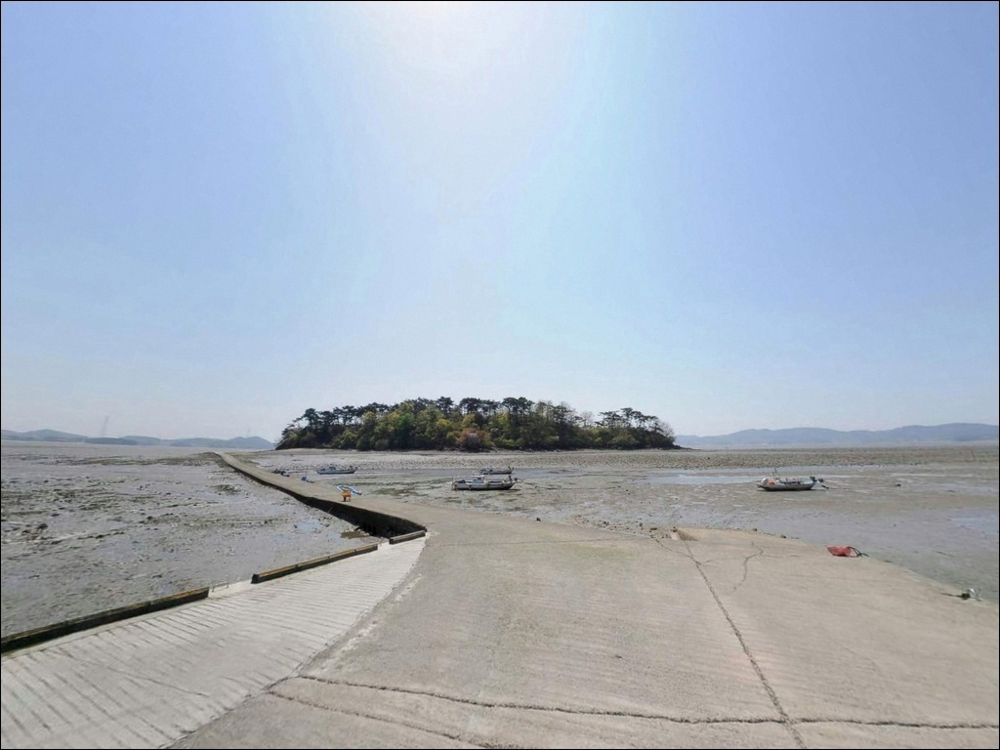

왕산포구, 충남 서산시 잔잔한 물결과 어울리는 차박, 낚시 한적한 포인트
이 페이지에는 광고(제휴 링크 포함)가 있으며, 광고 링크를 통해 구매하면 운영자가 판매 수익 또는 수수료를 받을 수 있습니다. 포인트 사진: 카카오맵 스카이뷰·로드뷰. 이 페이지의 지도·사진 이미지는 카카오맵의 실제 서비스 이미지와 다를 수 있습니다.


포인트 안내
왕산포구
충남 서산시 지곡면 중왕리 580-13
왕산포구를 처음 찾는 낚시꾼이
가장 많이 놓치는 판단은 물때입니다.
간조 시에는 선착장 앞이 갯벌로 드러나
낚시 가능한 수심이 아예 확보되지 않는 상황이 됩니다.
만조 전후 타이밍을 잡지 못하면
현장까지 이동하고도 빈손으로 돌아서는
결과가 됩니다.
충남 서산시 지곡면 중왕리,
가로림만 동측 해안에 위치한 왕산포구는
넓은 갯벌과 완만한 수심이 이어지는
내만형 어촌 포구입니다.
포구 정면에 안섬이 막고 있어
외해의 파도·조류 영향을 직접 받지 않는 구조로,
생활낚시와 원투낚시 위주의
탐색형 포인트로 알려진 곳입니다.
이 글은 왕산포구의
진입 환경, 물때 기반 낚시 여건,
적합한 낚시 스타일, 차박 체류 조건에 집중합니다.
조황 단정이나 특정 어종 보장은
이 글의 범위에 포함되지 않습니다.

1. 포인트 위치 및 진입 동선
서산 시내에서 29번 국도를 타고
지곡면 소재지 방향으로 진입한 뒤
중왕리 방면 마을도로를 따라 이동하는 구조입니다.
포장도로로 이어지며 평탄한 편이라
승용차·소형 SUV 기준 진입 자체에는
큰 어려움이 없는 편입니다.
마을 안쪽으로 들어갈수록
도로 폭이 좁아지는 구간이 포함될 수 있습니다.
대형 SUV나 캠핑 장비를 갖춘 차량이라면
출발 전 위성지도로 진입로를 먼저 확인하는 편이
현장 당황을 줄이는 방법입니다.
회차 공간은 선착장 인근 공터 수준이며,
후진 진출이 어려운 차량은 갓길 여건도 함께 살펴야 합니다.
어촌체험휴양마을과 해안 데크길이 연결된 관광지 성격도 있어
주말에는 방문 차량이 몰릴 수 있습니다.
낚시 출조라면 평일 방문이 진입·주차 측면에서 유리합니다.

2. 차박 환경과 야간 체류 여건
왕산포구는 민가가 있는 소규모 어촌 마을입니다.
야간에는 차량 통행이 거의 없는 편이고
외해 노출이 적어 파도 소음도 크지 않은 구조입니다.
해안 데크길과 산책로가 포구 주변에 조성되어 있어
일부 조명이 있을 가능성이 있지만,
데크를 벗어난 갯벌 방향은 어두운 편이라
개인 조명 장비는 반드시 챙겨야 합니다.
관광·체험 목적의 방문이 겹치는 마을이라
완전한 독립 노지 차박보다는
조용한 단기 체류 성격이 더 맞는 환경입니다.
포구 앞 주차 공간의 야간 체류 허용 여부는
사전에 확인되지 않으므로,
현지 안내판이나 표지판 기준으로 현장에서 판단해야 합니다.
이른 아침에는 어선 조업이 시작되는 마을입니다.
차량 통행과 소음에 주의하는 것이 기본 매너이며,
쓰레기는 전량 수거해 귀가 처리하는 것이
이 포인트를 오래 유지하는 조건입니다.


3. 주변 편의시설 현황
왕산포구 반경 3km 이내에는
확정된 편의점·마트 정보가 없습니다.
중왕리 일대는 소규모 어촌 마을 구조라
출발 전 서산 시내 또는 대산읍 방면에서
식수·얼음·낚시 소품·연료를 모두 갖추고 진입하는 것이
현실적인 준비 방식입니다.
왕산어촌체험휴양마을이 포구 인근에 운영 중이며,
해안 데크길과 서해랑길 77구간이 지나는 곳이기도 합니다.
관광·체험 목적의 인프라는 갖춰진 편이지만
낚시 전용 시설은 기대하기 어렵습니다.
응급 상황 발생 시 병원까지 거리가 있으므로
비상약품과 구명조끼는 기본 준비입니다.

4. 출발 전 반드시 챙겨야 할 준비사항
왕산포구 방문에서 가장 먼저 확인할 것은
바다타임 기준의 물때입니다.
가로림만은 서해 내에서도 조차가 큰 지역으로,
사리 전후 간조 때는 포구 앞이 넓게 갯벌로 드러납니다.
만조 전후 2~3시간을 노리는 계획이
이 포인트에서 낚시를 성립시키는 기본 조건입니다.
추가로 확인해야 할 사항이 하나 있습니다.
가로림만 일대는 해양생물보호구역으로 지정되어 있어,
구역 내 특정 행위에 제한이 있을 수 있습니다.
낚시 행위 허용 범위는 고시 세부 내용 기준이므로
방문 전 서산시청 또는 해양수산부에
현행 규정을 직접 확인하는 것이 먼저입니다.
갯벌 인접 포인트는 야간에 미끄러운 구간이 생기기 쉽습니다.
구명조끼와 헤드랜턴은 기본 준비이며,
물이 빠지는 방향과 퇴로를 미리 파악해 두는 것이
안전한 낚시를 위한 조건입니다.
원투 채비는 갯벌 바닥 특성상 밑걸림이 잦을 수 있으므로
여분 채비를 넉넉하게 준비하는 편이 좋습니다.

5. 물때가 조과를 결정하는
가로림만 갯벌 지형 분석
왕산포구가 위치한 가로림만은
남쪽으로 깊숙이 만입된 반폐쇄성 구조입니다.
포구 정면에 안섬이 자리해 외해 노출이 적고,
조류 흐름도 외항 방파제보다 완만한 편입니다.
갯골이란 갯벌 위로 물이 드나드는 자연 수로로,
어류가 이 수로를 따라 이동하는 구조라
갯골 방향이 포인트 선정의 핵심입니다.
선착장 앞 수역은 만조 시에도
아주 깊은 수심을 기대하기 어려운 구조로 보입니다.
간조가 진행될수록 갯벌이 넓게 드러나고,
낚시 가능한 수심은 만조 전후로만 일시적으로 확보됩니다.
가로림만 내만형 포인트에서는
만조 전후 2~3시간이 낚시 가능 시간의 전부라
입장 타이밍을 이 기준으로 잡아야 합니다.
선착장 끝단과 갯골 방향 수로가
상대적으로 수심이 유지되는 구간입니다.
채비를 멀리 던져 갯골 방향을 노리는 방식이
이 포인트 구조에 어울리고,
바닥은 갯벌·펄 혼성 지형이라
가벼운 봉돌로는 채비 안착이 어려울 수 있습니다.
최신 조황은 출발 전 반드시 검색해 보시기 바랍니다.


6. 왕산포구에 어울리는 낚시 스타일
원투낚시는 이 포인트 지형에 가장 맞는 방식입니다.
원투낚시란 무거운 봉돌 채비를 멀리 던져
바닥층 어종을 노리는 낚시 방식으로,
선착장 끝단에서 갯골 방향으로 던지는 패턴이
갯벌 지형 포인트에서 유효합니다.
망둥어·붕장어 계열이 이 방식으로 반응할 가능성이 있으며,
봄부터 가을까지 시즌 폭이 넓어
연중 시도해 볼 수 있는 스타일입니다.
라이트 루어도 만조 전후 수심이 확보되는 시간대에
노려볼 만한 방식입니다.
가로림만 수역은 숭어 서식 환경으로 알려진 곳이라
소형 지그헤드·웜 채비로 얕은 수심대를 탐색하면
숭어나 소형 농어 계열을 기대해 볼 수 있습니다.
야간에는 선착장 주변을 미노우나 메탈지그로
천천히 훑는 방식도 어울리는 편입니다.
주꾸미·갑오징어 에깅도 가로림만 권역에서
봄·가을 시즌에 시도해 볼 만합니다.
수심이 얕은 포인트 구조상 채비 운용 범위가 좁아,
만조 타이밍에 집중하는 것이 기본 전제입니다.
찌낚시는 선착장 끝단에서 만조 시간대 위주로
수심이 확보되는 구간에서 적합한 방식입니다.

7. 대안 포인트와 플랜 B 동선
왕산포구 물때가 맞지 않거나
낚시 여건이 기대에 못 미칠 경우,
가장 현실적인 대안은 삼길포항입니다.
서산시 대산읍 방향으로 차량 약 15km 거리에 있으며,
방파제와 갯바위 낚시 인프라가 갖춰진
규모 있는 어항입니다.
낚시점·식당·선상낚시 출조가 가능해
왕산포구와 비교해 낚시 환경이 다양합니다.
서산 A·B지구 방조제도 고려할 만한 대안입니다.
왕산포구에서 차량 20~25km 거리로,
삼치·고등어 루어, 우럭, 감성돔 등이
알려진 방조제 낚시 포인트입니다.
출발 전 "서산 A지구방조제 조황" 또는
"서산 B지구방조제 조황"으로
최신 정보를 먼저 검색해 보는 것이 좋습니다.
가로림만 동일 해안선을 따라 이동하면
중리포구 등 비슷한 구조의 어촌 포구들이 이어집니다.
왕산포구 현장 여건이 여의치 않을 때
같은 해안선의 인근 포구를 탐색 후보로 묶어두면
이동 효율을 높이는 데 도움이 됩니다.

물때 하나를 이해하면
왕산포구가 다르게 보입니다
원투낚시나 생활낚시를 즐기는 낚시꾼이라면
왕산포구의 갯벌형 지형은 잘 맞는 환경입니다.
복잡한 채비 없이 갯골 방향을 노리는 방식이면 충분하고,
봄부터 가을까지 시즌 폭도 넓은 편입니다.
다만 이 포인트는 물때를 맞추지 않으면
낚시 자체가 성립하지 않는 구조라는 점을
방문 전에 반드시 이해하고 가야 합니다.
수심 깊은 방파제 낚시나 루어 본격 출조를 목적으로 한다면
삼길포항이나 A·B지구 방조제 쪽이 더 맞는 선택입니다.
왕산포구는 가볍게 들러 손맛을 보거나
가족 동반 생활낚시를 계획하는 분께
물때만 맞추면 조용하고 한적한 곳으로 기억될 수 있습니다.
낚시를 마친 뒤 해안 데크길을 따라
하룻밤 조용히 머무는 차박 여행을 계획한다면,
현지 안내판 확인 하나가 방문의 질을 결정합니다.